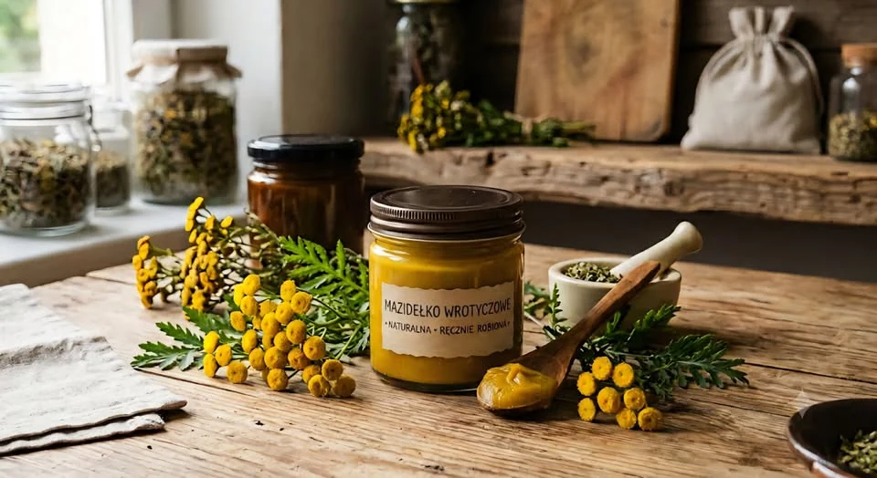
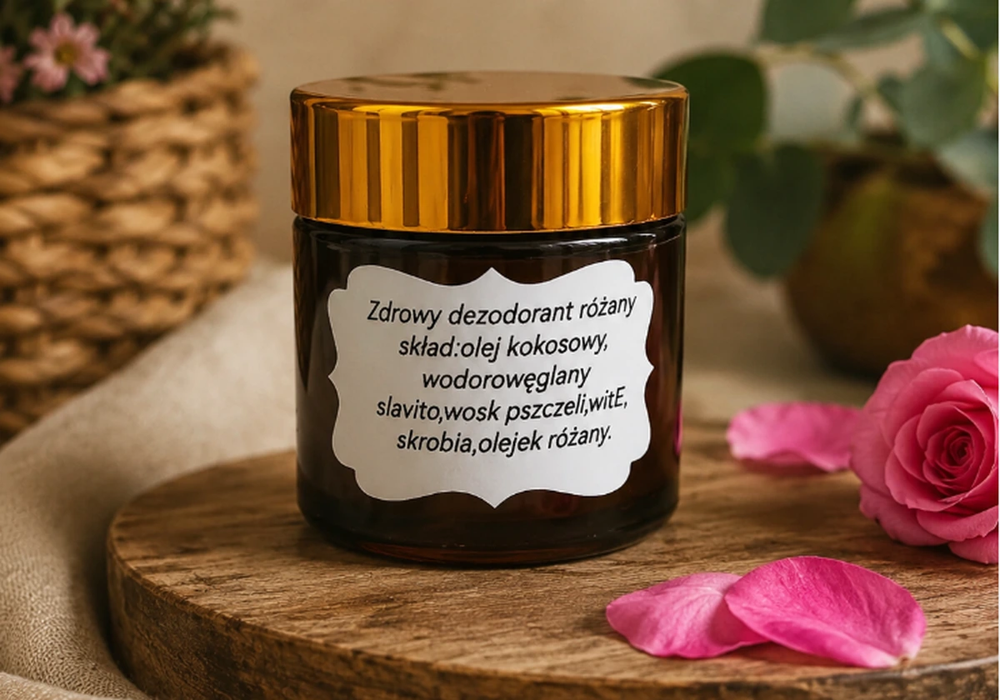
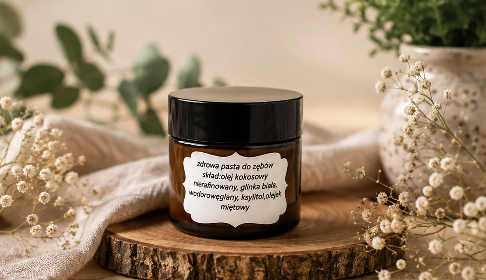
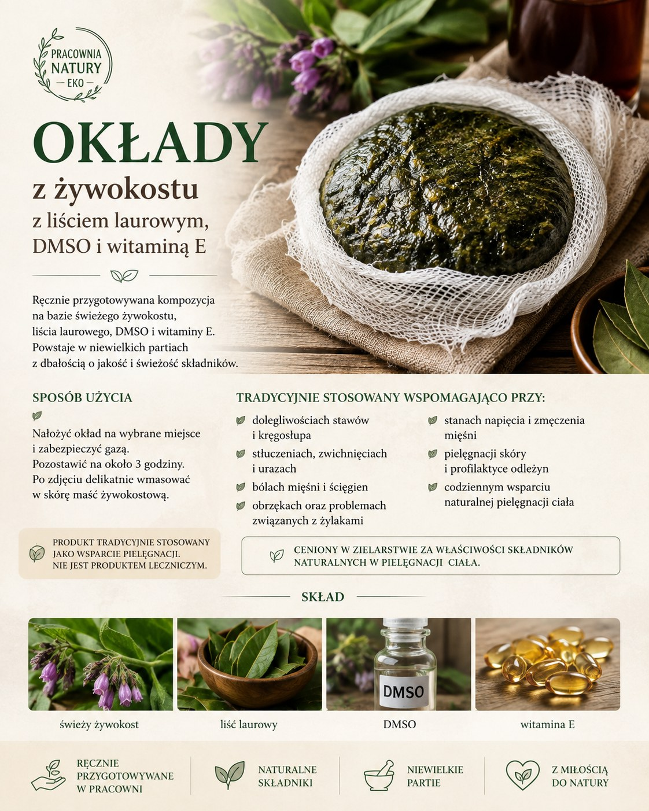

wyrób Pracowni
Mazidełko wrotyczowe
Ręcznie przygotowywany wyrób inspirowany tradycyjnym zielarstwem.
Wybierz konkretny wyrób. Dostępność najlepiej potwierdzić bezpośrednio lub przez ofertę OLX.

Ręcznie przygotowywany wyrób inspirowany tradycyjnym zielarstwem.

Olej kokosowy, wosk pszczeli, witamina E i olejek różany.

Olej kokosowy, glinka biała, ksylitol i mięta pieprzowa.

Kompozycja ze świeżego żywokostu, liścia laurowego, DMSO i witaminy E; do stosowania zewnętrznego.